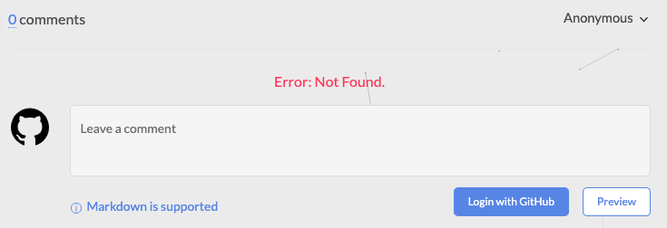

Here are some tips for the errors and other issues I’ve encountered during my study road~
Hope it helps. 😊
[TOC]
SSH beautify
After ssh to our school’s server murphy, the appearance is go gross that I cannot bear anymore. So I am ready to make it like my own terminal.
I copied my .oh-my-zsh directory and .zshrc configuration file into my remote server. Then when I change me shell to zsh, it stuck.
My friend told me it is because git will scan all the file in the server(I really don’t know why git will do this and don’t know if it is true that git really will do this). So
- I deleted all git-related plugin in my .oh-my-zsh directory (
rm -rf git*). - I disabled all git related thing in my theme file (You can find it in .oh-my-zsh/themes/$ZSH_THEMES_zsh.theme).
- I comment all git-related plugin in my user configuration file (.zshrc) which is git, auto jump.
Then when I run zsh in my remote server, the feeling of coming home is there.
😃
2019-4-25
I cannot bear the uncolored ssh terminal anymore especially that no color when I enter git status which makes it hard for me to see the report. So I google it and find it can be solved by enter
git config color.status always
Another happy thing: I’ve received the updated information from my intern company. Real world seems not that friendly. 😮
😃
2019-5-9
Github issues
‘invalid username or password’
When I try to help Michael to git push the local repo to the remote server, the terminal prompts out the error message:
1 | error: invalid username or password |
I search out all information about fatal error but seems nothing helps, then I notice that I have not 2FV but Mike has. So I try to cancel this property of Mike but then I realize that it is a personal settings.
So I search something about it and then find this url: https://help.github.com/en/articles/creating-a-personal-access-token-for-the-command-line.
- Issue solved.
- -]
2019-5-1
AND I FINALLY RECEIVE MY NEW AIRPODS!!!
Chinese filename appears as unicode filename in git status
1 | ➜ _posts git:(save) ✗ git status |
ref:https://stackoverflow.com/questions/34549040/git-not-displaying-unicode-file-names
try git config --global core.quotePath false command. The reason for this problem is because of MACOS implementation of Git. Since I updated MAC OS a few weeks ago, it may bring back the original configuration.
now it fixes my issue.
Shell script
Hexo Configs & Frequent Problems
Here are some useful configurations for hexo.
- beautify the article with shadow
1 | /* path:themes/next/source/css/_custom/custom.styl */ |
- Avatar rotation
1 | /* path:themes/next/source/css/_custom/custom.styl */ |
- Social icons don’t appear
1 | social: |
The final code should be something like this. ‘social’ cannot be commented out.
- Insert an image in a post
(need to set past_asset_folder attribute to true in _config.yml)
-
给文章添加 TOC
-
xcrun error: path error
1 | If you are facing an error like that on new MacOS version. |
-
link to another post on hexo
{% post_link xv6-the-first-process xv6-the-first-process %}first xv6-the-first-process is the name of your post and the second one is the link name for your post.
-
添加comment（gitalk, disqus, valine,最终选择了gitalk）
主要参考：https://asdfv1929.github.io/2018/01/20/gitalk/
-
issue1: Error: Not found

似乎是需要一点时间来完成配置。
-
issue2: Related Issues not found Please contact @TCoherence to initialize the comment
一度以为是next版本问题，其实是OAuth里面的URL的问题。。。不能用http，而是https，原因暂时未知。
-
-
Sort posts by updated time
Modify _config.yml file in root folder
1
2
3
4
5
6
7
8# Home page setting
# path: Root path for your blogs index page. (default = '')
# per_page: Posts displayed per page. (0 = disable pagination)
# order_by: Posts order. (Order by date descending by default)
index_generator:
path: ''
per_page: 10
order_by: -updated # <=== Here is the modification